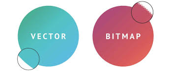
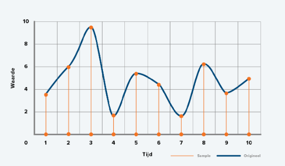
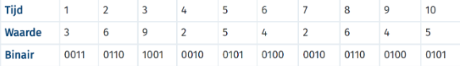

Bitmap- en vectorafbeeldingen
Bitmapafbeeldingen
Een bitmapafbeelding bestaat uit heel veel verschillende pixels (ga naar kleurmoddelen voor uitleg over pixels) met verschillende kleuren. Dit heeft twee nadelen: Ten eerste kost een bitmapafbeelding veel opslagruimte, omdat hij van elke pixel de RGB-waarde moet opslaan om de goede kleuren te krijgen. Daarnaast zie je de pixels als je inzoomt op de foto, wat een onzuiver en onprettig effect creëert. Dit zijn ook gelijk de twee kenmerken van een bitmapafbeelding. Om te voorkomen dat je de pixels in een foto ziet, kun je de foto uit nog meer pixels opmaken, maar dit kost nog meer opslagruimte. In plaats daarvan kun je een andere afbeelding maken: de vectorafbeelding.
Vectorafbeeldingen
Een vectorafbeelding gebruikt in tegenstelling tot de bitmapafbeelding geen pixels, maar gebruikt de vormen waaruit een afbeelding is opgebouwd en slaat dit op. Een vectorafbeelding kun je dus inzoomen, zonder dat het onzuiver en lelijk wordt, daarom wordt de vectorafbeelding vaak voor logo's of reclameborden gebruikt. Van dit soort afbeeldingen worden de eigenschappen opgeslagen, zoals locatie, kleur en de vorm. Deze manier is veel efficiënter dan de RGB-waarde van elke pixel op te slaan, daarom kosten vectorafbeeldingen ook minder opslagruimte vergeleken met bitmapafbeeldingen (met een hoge hoeveelheid pixels). Nog een voordeel van een vectorafbeelding is dat er gemakkelijk aanpassingen gemaakt kunnen worden. Het klinkt alsof vectorafbeeldingen over het algemeen veel beter werken als bitmapafbeeldingen, dus waarom gebruiken we geen vectorafbeeldingen bij het maken van een digitale foto? Dit is omdat er in een digitale foto veel verschillende kleuren en vormen zitten en dan is het niet mogelijk om hem als vector op te slaan.

Geluidsfragmenten
Net zoals afbeeldingen, tekst en kleuren worden opgeslagen, kunnen geluidsfragmenten ook worden opgeslagen, maar op welke manier wordt het geluid opgeslagen op een computer. Geluid is eigenlijk een trilling in de lucht en dit kan met behulp van een microfoon opgenomen worden. Deze trilling wordt door de microfoon omgezet in een elektrisch signaal en de computer zelf maakt deze signalen weer om in bepaalde waarden, dit proces wordt 'samplen' genoemd. Tijdens het samplen wordt er op verschillende momenten de sterkte van het geluid gemeten, laten we voor het gemak uitgaan van elke seconde. Deze samples kun je weergeven in een tabel of een grafiek, hieronder staat daar een voorbeeld van. Als er meer samples worden opgenomen, wordt het geluid nauwkeuriger en preciezer. Hoe vaak samples worden opgenomen per seconde, wordt de 'sample rate' genoemd. De sample rate wordt uitgedrukt in Hz (Hertz) of kHz (kilohertz) en bij muziek ligt dit vaak rond de 44.100 Hz. Dit betekent dat het geluid 44.100 keer per seconde wordt opgenomen!

